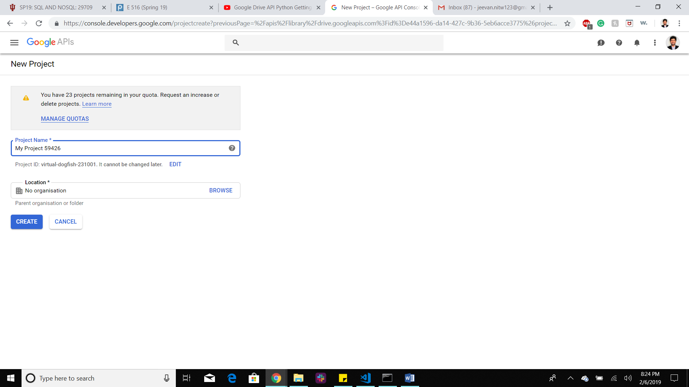

Google Storage Providers¶
Google Drive¶
Google Drive is a file storing platform where an user can store all his/her
files in the google drive. Here files can be of any form ranging from
documents to audio / video or image files. In free account each user will be
given around 15 GB of free data space to be stored. We can create folders and
subfolders in the Google Drive to store our data.
Each file will be stored in Google cloud with a unique URL and it’s up to the user to make the file sharable or not. Google Drive is reliable and if an user has different devices and if he/she wants to access those files then Google Drive is needed in this case as he can have access to his file as all his files are stored in the cloud. The user does not need to install any kind of software in order to view these files.
Google Docs¶
Google docs is especially designed for viewing or editing or sharing the documents like Docs, Sheets, Slides, Forms. No need to install any software to access or edit these. And google doc can be sharable with editable option. There is an automatic mechanism to convert Microsoft documents to Google Docs.
Google Docs: Google docs is a broader term for Google sheets, Google slides and Google forms.
Google Sheets: Just like Microsoft excel sheet Google sheets has almost all of the functionalities. Google sheets can be shared with other people and can concurrently work on it and can edit it. We can change the font size, type as we want. We can use the formulas to calculate some mathematical expressions. This can be readily transformed to
.csvor.xlsxformat.Google Slides: Just like Microsoft PowerPoint presentation, Google has Googleslides. We can do small animations, transformations of slides. This can be shared with other people to edit this on real time basis.We can change the font size, type of these as we want.
Google Forms: Out of all Google docs this is the most powerful tool when anyone wants to collect data from other people. One can make a Google form and can share it via the link. The one who opens this link will see a form to fill. We can add many different types of survey questions with multiple choice or Multiple options, or text entries or date entries or choose from a list entry. This google forms can be used to conduct surveys within a close group like teachers, students or employees.
In a broader sense Google docs is just a subset of Google Drive
Python Google Drive API¶
Step-by-step process¶
Before writing the Python interface for Google Drive, we need to setup an email account, with that email account we will get a set of google services and one of them is Google Drive with 15 GB overall storage.
After that we need to go through the Google Drive Quick start guide:
<https://developers.google.com/drive/api/v3/quickstart/python >
There we can see Enable API option as shown in the next picture:
 Image1
Image1
Once we enable that we will get credentials.json file where all of our credentials are stored that can be used to communicate with our Google Drive through Python Interface. After that, we will be redirected to a page where we need to create our own project as shown in the next picture:
image2
As we see next we need to select Google Drive API from here
 gd1
gd1
After that, we need to obtain the client_secret file as shown next: (The file that is downloaded as client_id.json needs to be renamed as client_secret.json)
 image3
image3
After this we need to click Done otherwise it would not set the Google Drive API
After this if we run Authentication.py we will be redirected to our default browser to put our our login id and password and after that it asks to authenticate our credentials. If we allow that as shown next:
 gd2
gd2
We will get the screen something like given next (as the authentication pipeline has bees completed).
 gd3
gd3
If the authentication flow is completed then the Authentication.py will create a
google-drive-credentials.json file in .credentials folder. This file
can be used for future purposes. If we delete this file then the
Authentication.py will again ask for login id and password and again
create that file automatically.
So, now with the client_secret.json,
google-drive-credentials.json
and with Authentication.py and Provider.py our setup is ready
Once all these steps are done correctly, then we can use the Python program interface to transfer the files between our Python program and Google Drive.